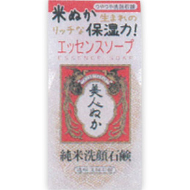
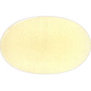

<!DOCTYPE html>
<html>
<meta http-equiv="Content-Type" content="text/html; charset=utf-8">
<a href="../menu.html">返回列表</a>
<hr border=1/>
产品名称：純米洗顔石鹸<hr border=1/><hr border=1/>リアル&nbsp;純米洗顔石鹸&nbsp;１００ｇ<br/>メーカー 	リアル<br/>JANコード 	4903432712939<hr border=1/><div>
<strong>商品の特徴</strong>
<p>米ぬか生まれのリッチな保湿力！<BR>エッセンスソープ<BR>つやつや洗顔石鹸</p>

<dl>
<dt>成分・分量</dt>
<dd>石ケン素地・グリセリン・スクロース・ソルビトール・コメヌカ油・コメヌカエキス・オリザノール・イノシトール・ベタイン・グリチルリチン酸２Ｋ・カラメル・ＰＥＧ７５・水・エタノール・エチドロン酸・香料・ＥＤＴＡ２Ｎａ</dd>
<dt>用法及び用量</dt>
<dd>水またはぬるま湯を加えて良く泡立て、泡でお顔を包み込むように洗います。その後、よく洗い流してください。</dd>
</dl>
</div>
</body>
</html>
